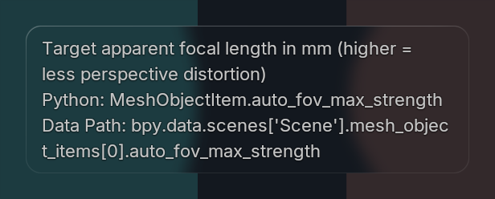
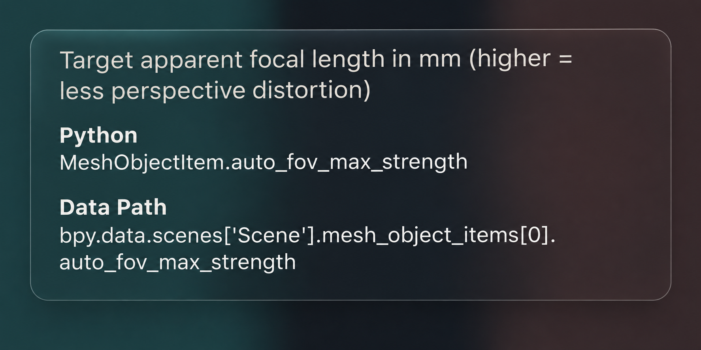
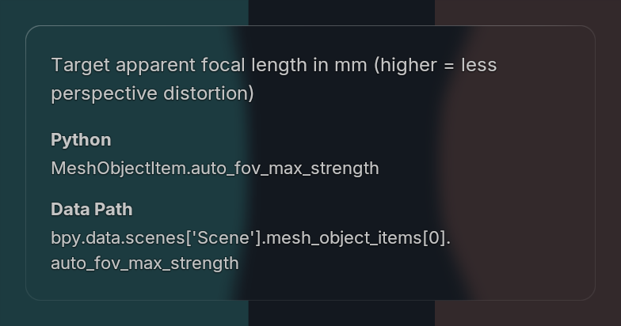

Shared hover styling: padded description, bold section labels, separate Python and Data Path blocks, measured wrapping and preserved glass, theme colors and bounce.



Actual GPU captures use Uraraka's Apparent Focal Length property, loaded fonts and active Blender theme over a controlled backdrop. The reference is generated artwork; its glass/rim and exact proportions differ. Current acceptance is a close, consistent match. No scene or preferences saved.
375 unit tests and no-focus Blender 5.1.2/5.2.2 tooltip/popover checks passed. No test activation observed. Evidence · Overview · Generation prompt